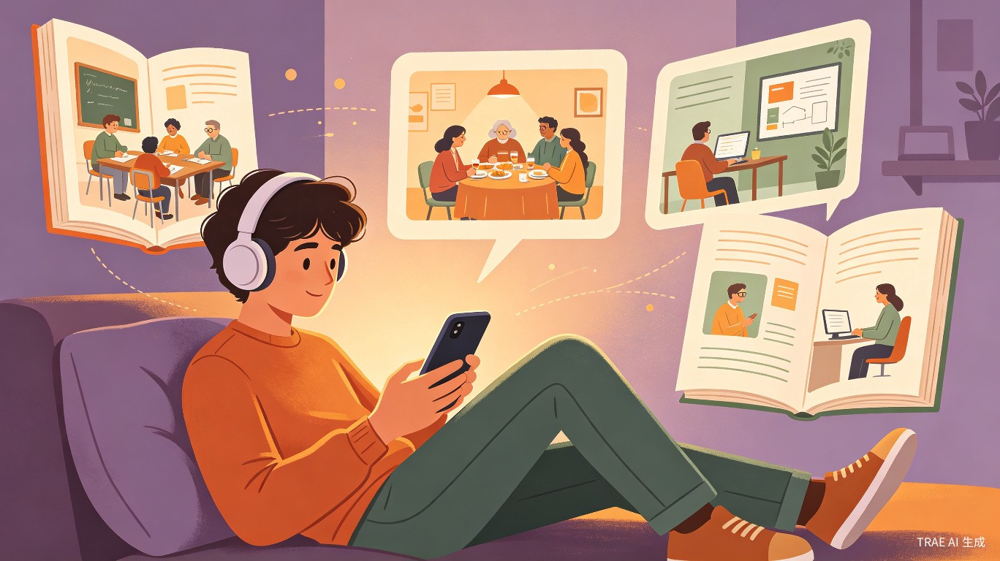

「愈见剧本」
产品方案全案
心理健康主题互动叙事平台 — 创造力大赛社会服务赛道
一、产品概述
1.1 产品定位
「愈见剧本」是一款基于叙事治疗（Narrative Therapy）和认知行为疗法（CBT）理论的心理健康主题互动叙事平台。用户通过扮演故事主角，在关键剧情节点做出选择，每个选择对应一种心理应对方式。剧本结束后，系统生成个性化的心理应对模式报告，并提供针对性的疗愈建议。
1.2 核心洞察
为什么「剧本杀+心理疗愈」有巨大机会？
1. 心理剧本杀已获行业验证 — 万生心语的心理剧本杀产品在2026年社会心理服务产业融合博览会上成为全场焦点，被证实"低防御、高治愈"[2]
2. 游戏化心理干预是趋势 — 全球心理健康App市场中，33%的平台已整合游戏化元素，用户留存率提升30%[3]
3. 叙事治疗有循证基础 — 叙事治疗被证明能有效帮助个体重构问题故事，建立更积极的自我认同
4. 年轻人更爱"玩中学" — 深圳吉华街道心理剧本杀工坊以"玩中学"形式获得青少年和家长一致认可[4]
1.3 产品Slogan
"在别人的故事里，看见自己的答案"
通过角色扮演降低心理防御，让用户在安全距离内探索自己的应对模式，最终实现自我觉察和成长。
二、详细产品设计
2.1 产品架构
flowchart TB
A[用户进入小程序] --> B{选择剧本}
B --> C[剧本体验阶段]
C --> D[剧情节点选择]
D --> E[AI实时反馈]
E --> F{是否继续}
F -->|是| D
F -->|否| G[生成心理报告]
G --> H[疗愈建议]
H --> I[社区分享]
I --> J[持续追踪]
2.2 剧本内容设计
每个剧本围绕一个核心心理主题，覆盖全年龄段典型场景。以下是首批6个剧本的设计：
「高考前夜」
你是高三学生林小北，距离高考还有30天。模拟考成绩下滑、父母期望、同学竞争让你喘不过气。今晚，你独自在房间里，手机亮了——是班主任发来的消息。
目标用户：青少年（13-18岁）| 心理主题：考试焦虑、完美主义、自我效能感 | 核心疗法：认知行为疗法（CBT）
关键选择节点示例：
- A. 立刻回复老师，承诺会努力（讨好型应对）
- B. 关掉手机，假装没看见（逃避型应对）
- C. 深呼吸，先给自己10分钟冷静（调节型应对）
「新人入职第一周」
你是应届毕业生阿杰，第一天入职互联网公司。午餐时间，同事们三三两两去了餐厅，你一个人坐在工位上，不知道要不要主动加入。
目标用户：青年（19-35岁）| 心理主题：社交焦虑、归属感、自我暴露 | 核心疗法：接纳承诺疗法（ACT）
「妈妈的微信」
你是28岁的设计师小雨，加班到深夜刚到家，妈妈发来一条60秒语音方阵："隔壁小王都二胎了，你什么时候带男朋友回家？"
目标用户：青年（19-35岁）| 心理主题：边界设定、代际沟通、自我认同 | 核心疗法：辩证行为疗法（DBT）
「第一天不用上班」
你是刚退休的王老师，今天是退休第一天。闹钟没响，你5点就醒了。坐在沙发上，看着窗外天慢慢亮起来，突然不知道今天该干什么。
目标用户：中老年（55岁+）| 心理主题：身份转换、价值感丧失、生活节奏重建 | 核心疗法：意义疗法（Logotherapy）
「周末家庭聚餐」
你是40岁的职场妈妈，周末带两个孩子回父母家聚餐。饭桌上，爸爸又开始批评你的教育方式，妈妈在一旁叹气，丈夫低头玩手机。
目标用户：中年（36-55岁）| 心理主题：家庭边界、代际冲突、情绪调节 | 核心疗法：家庭系统治疗
「凌晨两点的屏幕」
你是初二学生小宇，凌晨两点还在刷短视频。明天要交的作业一个字没写，但手指停不下来。屏幕上弹出一条消息："你的今日屏幕使用时间为11小时32分。"
目标用户：青少年（13-18岁）| 心理主题：行为成瘾、即时满足、自我调节 | 核心疗法：正念训练+行为激活
2.3 互动机制设计
角色代入
用户选择角色后，进入第一人称视角。背景音、场景插画、角色独白营造沉浸感。关键剧情配有语音旁白。
分支选择
每个剧本设置8-12个关键选择节点。选择不仅影响剧情走向，更被记录为"心理应对模式数据"。
AI实时反馈
每次选择后，AI给出简短的心理学解读（如"你选择了逃避，这在短期内缓解焦虑，但长期可能..."）。
心理报告
剧本结束后生成可视化报告：应对模式雷达图、情绪曲线、认知偏差识别、个性化建议。
2.4 技术实现方案
| 模块 | 技术方案 | 说明 |
|---|---|---|
| 前端 | 微信小程序 + Taro框架 | 跨平台，开发效率高，用户触达成本低 |
| 后端 | 微信云开发（云函数+数据库） | 免服务器运维，按量付费，适合MVP |
| AI解读 | DeepSeek/通义千问 API | 大模型生成个性化心理反馈，成本低 |
| 内容管理 | 自研CMS | 剧本内容、插画、音频统一管理 |
| 数据分析 | 神策数据 / 自建埋点 | 用户行为追踪，剧本完成率分析 |
三、综合评估矩阵
3.1 多维度评分
3.2 与竞品对比
| 维度 | 愈见剧本 | 万生心语（线下） | Headspace | 简单心理 |
|---|---|---|---|---|
| 形式 | 线上互动叙事 | 线下团体剧本杀 | 冥想音频 | 在线咨询 |
| 触达成本 | 极低（小程序） | 高（场地+主持） | 低（App） | 中（App/网页） |
| 用户门槛 | 低（像玩游戏） | 中（需到场） | 中（需坚持） | 高（需付费咨询） |
| 个性化 | 高（AI+选择分支） | 中（主持人引导） | 中（推荐算法） | 高（一对一） |
| 可规模化 | 极高（纯线上） | 低（依赖人力） | 高 | 中（咨询师有限） |
| 数据价值 | 高（行为数据） | 低 | 中 | 中 |
| 社会价值 | 高（普惠+预防） | 高（深度疗愈） | 中 | 高（专业治疗） |
3.3 SWOT分析
优势 (Strengths)
1. 形式新颖，"剧本杀+心理"国内首创线上化
2. 零线下依赖，2-3人团队即可启动
3. 叙事治疗有循证基础，非玄学
4. 用户行为数据积累形成壁垒
劣势 (Weaknesses)
1. 内容生产成本高，每个剧本需专业创作
2. 需要心理学专业顾问审核内容
3. 用户单次体验时长较长（20-40分钟）
4. 小程序生态限制部分功能
机会 (Opportunities)
1. 心理健康软件市场年增24.3%
2. 游戏化心理干预是明确趋势
3. 学校/企业EAP采购需求增长
4. AI大模型降低内容生产成本
威胁 (Threats)
1. 大厂可能快速跟进
2. 内容审核监管趋严
3. 用户新鲜感消退快
4. 心理内容需避免"医疗诊断"红线
四、完整落地时间线
4.1 第一阶段：MVP验证（第1-6周）
剧本创作与专家审核
完成1个完整剧本（推荐「高考前夜」）。邀请1-2位心理学专业顾问审核剧本内容，确保符合伦理规范。同步制作剧本插画（6-8张）和关键节点配音。
小程序核心功能开发
开发剧本阅读、选择分支、AI反馈、简单报告功能。使用微信小程序+云开发，预计开发量2-3周（1名前端+1名后端）。
种子用户测试
招募30-50名种子用户（高中生、大学生、职场新人各10-15人）。收集完成率、选择分布、报告满意度等数据。目标：剧本完成率>60%，报告满意度>4分（5分制）。
4.2 第二阶段：产品迭代（第7-14周）
剧本扩展与功能完善
新增2-3个剧本（推荐「新人入职第一周」「妈妈的微信」）。完善心理报告（增加雷达图、认知偏差识别）。上线"剧本社区"功能，用户可分享选择和感悟。
小规模推广
通过小红书、抖音、B站进行内容营销（发布剧本片段、用户故事）。与3-5个学校心理社团合作推广。目标：注册用户2000+，日活300+。
4.3 第三阶段：规模化（第4-6个月）
内容矩阵与商业化探索
剧本库扩展至8-10个。上线"剧本创作工具"，邀请UGC创作者投稿。探索企业EAP合作（为企业提供定制化职场心理剧本）。
数据产品化
基于用户行为数据，发布"Z世代心理应对模式白皮书"。向高校/研究机构提供脱敏数据。探索与保险公司的合作（心理健康险数据支持）。
4.4 资源需求与里程碑
| 阶段 | 周期 | 资金 | 人力 | 核心里程碑 |
|---|---|---|---|---|
| MVP验证 | 1-6周 | 5,000-8,000元 | 3人+1顾问 | 1个剧本+小程序上线+50人测试 |
| 产品迭代 | 7-14周 | 10,000-15,000元 | 4人+1顾问 | 4个剧本+社区功能+2000用户 |
| 规模化 | 4-6月 | 30,000-50,000元 | 6人+2顾问 | 10个剧本+UGC工具+企业合作 |
五、风险预判与解决方案
5.1 内容层面风险
剧本内容触发用户创伤
场景：用户在体验剧本时，剧情触发了其真实创伤经历，导致情绪崩溃。
解决方案：
1. 每个剧本开头设置"内容预警"，提示可能触发的情绪
2. 剧本中嵌入"暂停呼吸"按钮，用户可随时退出
3. 剧本结束后自动推送心理援助热线和放松音频
4. 所有剧本经心理学顾问审核，避免过度渲染创伤场景
被误认为医疗诊断工具
场景：用户将心理报告当作专业诊断，延误真实治疗。
解决方案：
1. 报告首页明确标注"本报告仅供自我觉察参考，不构成医疗诊断"
2. 检测到高风险模式时，主动建议用户寻求专业帮助
3. 与本地心理咨询机构建立转介合作
4. 申请"非医疗器械"备案，避免监管风险
剧本内容生产瓶颈
场景：专业剧本创作速度慢，无法支撑用户持续增长。
解决方案：
1. 建立"剧本创作SOP"，标准化创作流程
2. 与高校心理学系合作，学生创作+导师审核
3. 开发"AI辅助创作工具"，AI生成初稿，人工润色
4. 引入UGC模式，认证创作者可上传剧本
5.2 产品层面风险
用户完成率低
场景：用户中途退出，剧本完成率低于50%。
解决方案：
1. 剧本分段保存，支持断点续玩
2. 设置"今日目标"（如"完成3个选择节点"），降低心理压力
3. 增加剧情悬念和钩子，每节点选择后留下悬念
4. 推送策略：退出后24小时发送"你的故事还在等你"提醒
AI反馈质量不稳定
场景：大模型API生成的反馈有时不准确或不合时宜。
解决方案：
1. 建立"反馈模板库"，常见选择对应预设反馈
2. AI生成后增加人工抽检机制
3. 用户可对反馈点赞/点踩，持续优化模型
4. 设置"反馈申诉"入口，用户可要求重新生成
竞品快速模仿
场景：模式验证后，大厂或竞品推出类似产品。
解决方案：
1. 快速积累剧本库，形成内容壁垒
2. 建立用户社区和KOL体系，增强粘性
3. 申请软件著作权保护核心代码
4. 与心理学机构建立独家合作，获取专业背书
5.3 风险应对总览
| 风险类别 | 具体风险 | 概率 | 影响 | 应对策略 | 责任人 |
|---|---|---|---|---|---|
| 内容 | 触发用户创伤 | 中 | 高 | 内容预警+暂停按钮+热线推送 | 内容负责人 |
| 合规 | 被误认为医疗诊断 | 高 | 高 | 免责声明+转介合作+非医疗器械备案 | 产品负责人 |
| 产品 | 用户完成率低 | 高 | 高 | 断点续玩+分段目标+悬念设计 | 产品经理 |
| 内容 | 剧本生产瓶颈 | 中 | 中 | SOP+高校合作+AI辅助+UGC | 内容负责人 |
| 技术 | AI反馈质量不稳 | 中 | 中 | 模板库+人工抽检+用户反馈 | 技术负责人 |
| 商业 | 竞品模仿 | 中 | 中 | 内容壁垒+社区粘性+独家合作 | 创始人 |
六、大赛路演建议
6.1 路演结构（8分钟版）
痛点引入：一个真实的故事
开场播放30秒视频：一个高三学生在深夜刷题，手机弹出「愈见剧本」小程序。他点开「高考前夜」剧本，在角色选择中看到了自己的影子。用真实场景打动评委。
市场机会：数据说话
展示关键数据：8420万心理健康软件活跃用户、青少年抑郁检出率40%+、心理剧本杀行业验证。说明"剧本杀+心理"是已被验证的创新方向。
产品Demo：现场体验
现场演示小程序：打开「高考前夜」剧本，走到第一个选择节点，邀请评委做选择。展示AI反馈和报告生成。让评委"亲手"体验产品。
商业模式：可持续运营
展示三层收入模型：C端会员（高级剧本+深度报告）、B端企业EAP（定制职场剧本）、G端政府合作（学校心理筛查工具）。
团队与社会价值
介绍团队背景（心理学+技术+内容）。强调社会价值：让心理服务从"治疗少数人"走向"预防大多数人"，降低心理服务门槛。
收尾：金句+愿景
"我们相信，每个人都值得被温柔地看见。愈见剧本，让心理疗愈像读一本好书一样简单。"
6.2 路演材料清单
开场视频（30秒）
真实用户使用场景，展示痛点和产品价值。建议用手机实拍+剪辑，成本低但真实感强。
现场Demo
准备2台手机（1台备用），确保网络稳定。提前缓存剧本内容，避免现场加载慢。
数据展板
1页PPT展示核心数据：市场规模、用户需求、测试结果。数据要精确到小数点后1位，增强可信度。
用户证言
准备2-3条种子用户的真实反馈（文字+头像）。如果有视频证言更好，30秒以内。
6.3 评委可能提问及应对
| 可能问题 | 应对策略 |
|---|---|
| "你们不是心理学专业，如何保证内容科学性？" | 我们已与XX大学心理学系建立合作，所有剧本经专业顾问审核。同时，产品定位是"心理自助工具"而非"医疗诊断"，降低专业门槛。 |
| "用户玩一次剧本后还会回来吗？" | 我们设计了"剧本宇宙"——同一角色的不同剧本相互关联，用户想"看完整个故事"。同时，每周更新"限时剧本"，制造稀缺感。 |
| "大厂如果做类似产品怎么办？" | 我们的壁垒在于：①剧本内容壁垒（需心理学+文学复合能力）；②用户数据壁垒（行为数据训练AI模型）；③社区壁垒（早期用户情感连接）。大厂擅长技术，但心理内容需要长期积累。 |
| "如何证明你们真的有社会价值？" | 我们设计了"社会价值量化指标"：①剧本完成率（反映用户投入度）；②报告分享率（反映用户认可度）；③后续行为改变率（如用户是否因此寻求专业帮助）。这些指标将在产品中持续追踪。 |
| "盈利模式是什么？公益项目怎么可持续？" | 三层收入：C端会员（基础免费，高级收费）；B端企业EAP（定制职场剧本）；G端政府合作（学校心理筛查）。基础功能永远免费，确保普惠性。 |
路演成功的三个关键
- 让评委"玩"起来 — 现场Demo比任何PPT都更有说服力。提前测试设备，确保流畅。
- 用数据讲故事 — 不要只说"很多人有心理问题"，要说"8420万人中，68.3%是18-35岁，他们更愿意'玩'而非'聊'"
- 展示真实用户 — 哪怕只有10个种子用户，他们的真实反馈比任何假设都更有力。
七、总结
「愈见剧本」核心亮点
1. 创新形式 — 国内首个线上化心理剧本杀平台，将叙事治疗游戏化
2. 科学基础 — 基于CBT、ACT、DBT等循证疗法，经心理学顾问审核
3. 普惠定位 — 基础功能免费，降低心理服务门槛，覆盖全年龄段
4. 数据壁垒 — 用户选择行为数据训练AI模型，形成长期竞争优势
5. 可持续模式 — C端+B端+G端三层收入，公益与商业平衡
立即行动清单
- 本周：确定3人核心团队，联系1位心理学顾问
- 第2周：完成「高考前夜」剧本初稿
- 第3-4周：启动小程序开发
- 第5-6周：种子用户测试，收集反馈
- 第7-8周：迭代优化，准备大赛材料